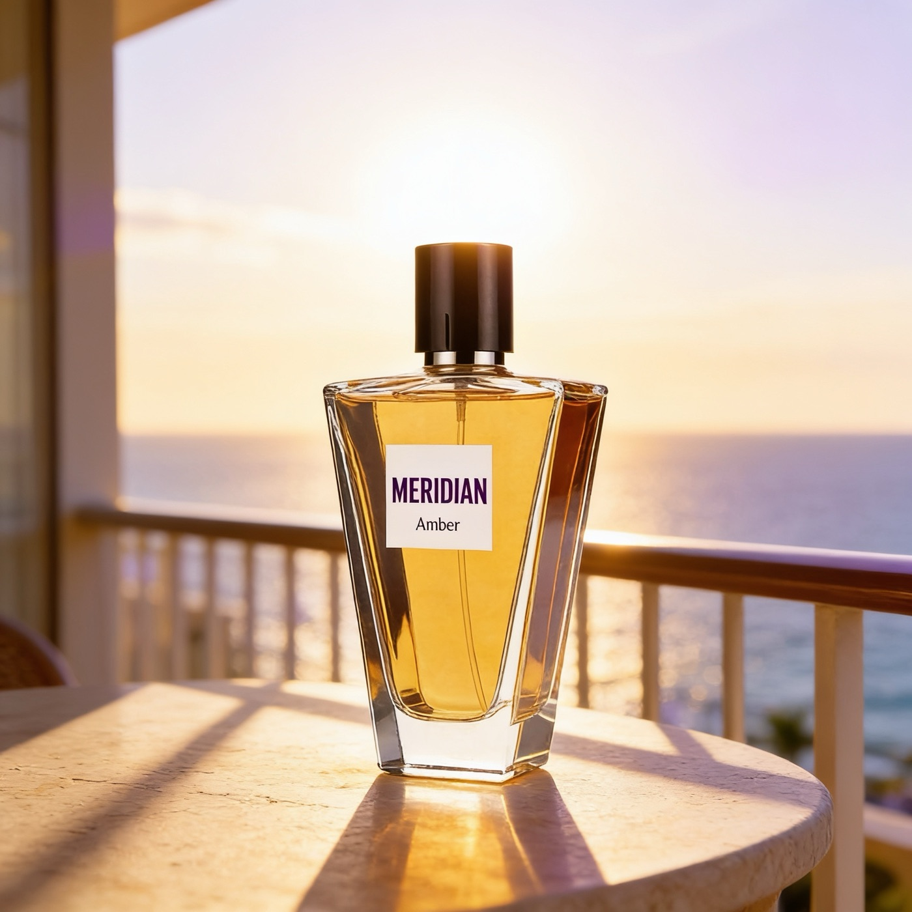
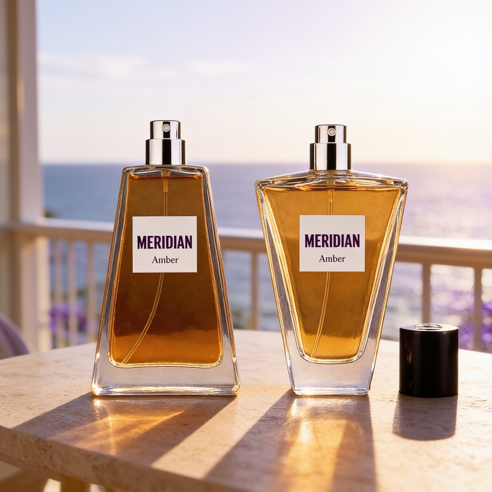
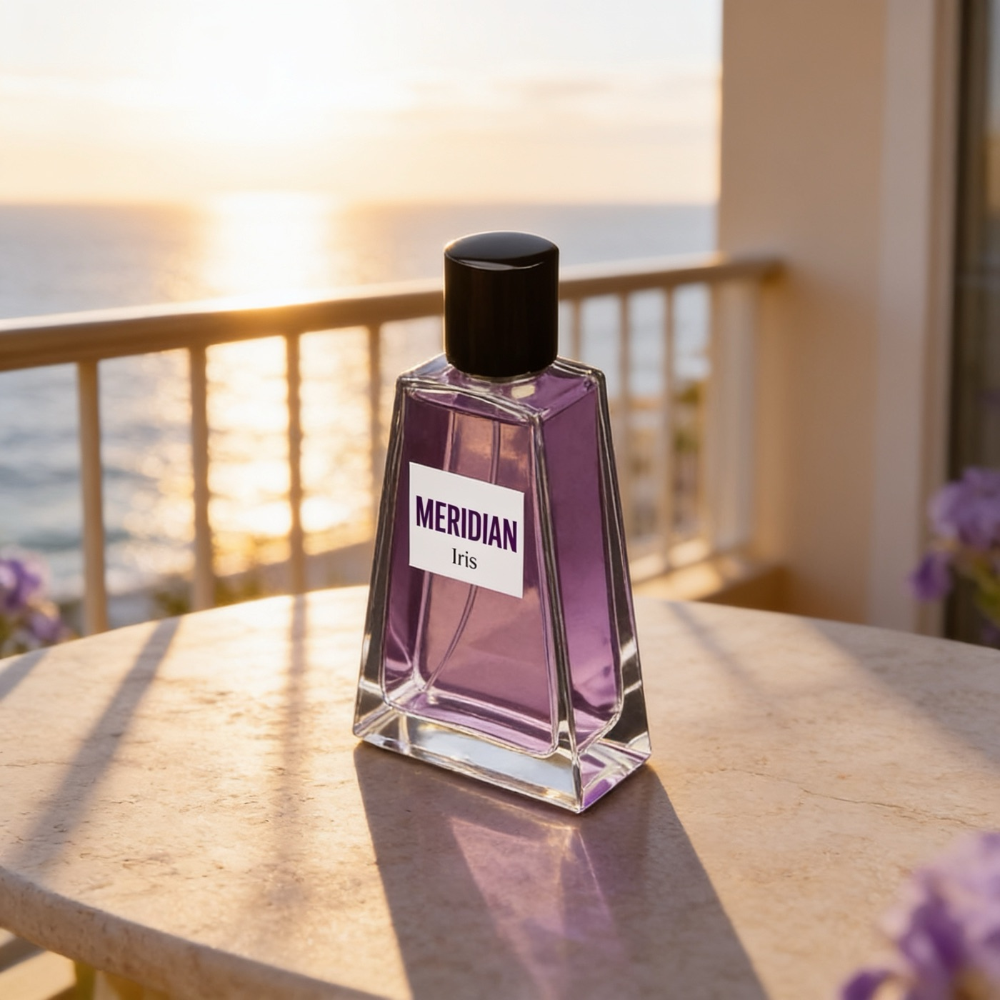

Topnoot · eerste 15 min
Citrusnoten
De eerste ademhaling. Helder en sprankelend, alsof je de gordijnen opentrekt in een kamer met uitzicht.
Binnenkort verkrijgbaar
Meridian is een lichte, ongecompliceerde cologne voor wie altijd onderweg is. Eén spray na de landing en je bent klaar voor de dag, in welke stad of tijdzone je ook wakker wordt.


01 — Ons verhaal
Een meridiaan is een denkbeeldige lijn van pool tot pool. Waar je ook staat op de wereld, er loopt er één onder je voeten. Zo zien wij een goede geur: iets wat altijd meegaat en overal klopt.
Meridian is gemaakt voor reizende professionals. Mensen die 's ochtends een vlucht halen, 's middags pitchen en 's avonds in een andere stad dineren. Je hebt geen tijd om na te denken over welke geur bij welk moment past. Daarom houden we het eenvoudig: een frisse, luchtige cologne die je zonder twijfel draagt in de vergaderzaal, op de luchthaven en op het terras.
Geen ingewikkelde rituelen, geen zware wolk die de lift vult. Gewoon een heldere geur die naar zon en open lucht ruikt, in een flacon van 50 ml die in je handbagage past.
02 — De geur
Elke Meridian deelt dezelfde frisse basis. Hij opent helder, wordt groen en schoon, en droogt op tot warm hout dat dicht bij je huid blijft.
De eerste ademhaling. Helder en sprankelend, alsof je de gordijnen opentrekt in een kamer met uitzicht.
Groen en kruidig. Het deel dat je rustig houdt tijdens een middag vol calls.
Droog, warm en stil. Nog steeds aanwezig als je 's avonds incheckt, zonder ooit te overheersen.
03 — De collectie
Kies de geur die past bij jouw manier van reizen.

Warm en zonnig
Amber, vanille en sandelhout maken van elke hotelkamer even thuis.
Fris en groen
Salie, bergamot en vetiver voor een heldere start na een nachtvlucht.
Zacht en verfijnd
Iris, viooltje en witte musk, subtiel genoeg voor elke vergaderzaal.
Kruidig en zelfzeker
Zwarte peper en leer voor de afspraak die telt.
04 — De film
Gouden uur op een hotelbalkon. Zo ruikt een reisdag die goed eindigt.
De eerste editie
Meridian komt binnenkort uit. Schrijf je in, hoor als eerste de lanceringsdatum en ontvang een gratis staaltje van je favoriete geur.
Join The Journey